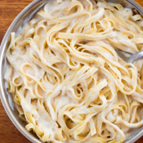

Vegan Alfredo

Description
Creamy vegan alfredo sauce is easy to make
at home for dinner, with no dairy, eggs, or cashews required.
Ingredients
- 2 cups of milk of choice or nondairy creamer
- 3 1/2 tbsp cornstartch or 5 tbsp flour (or try this cauliflower Alfredo Recipe)
- 2 tbsp oil or vegan butter (for oil free, see note above
- 6 tbsp vegan parmesan or nutritional yeast
- 1/2 tsp salt, plus salt and pepper to taste
- 8 oz pasta, optional
Instructions
- In a saucepan, whisk cornstarch into milk until completely dissolved. Whisk in salt and oil (and 2 tsp garlic if desired)
- Slowly bring to a boil over low-medium heat, stirring occasionally at first and then constantly once it starts to thicken.
- Once thick, turn off heat and stir in cheese until it melts. Taste, and season with salt and pepper as desired.